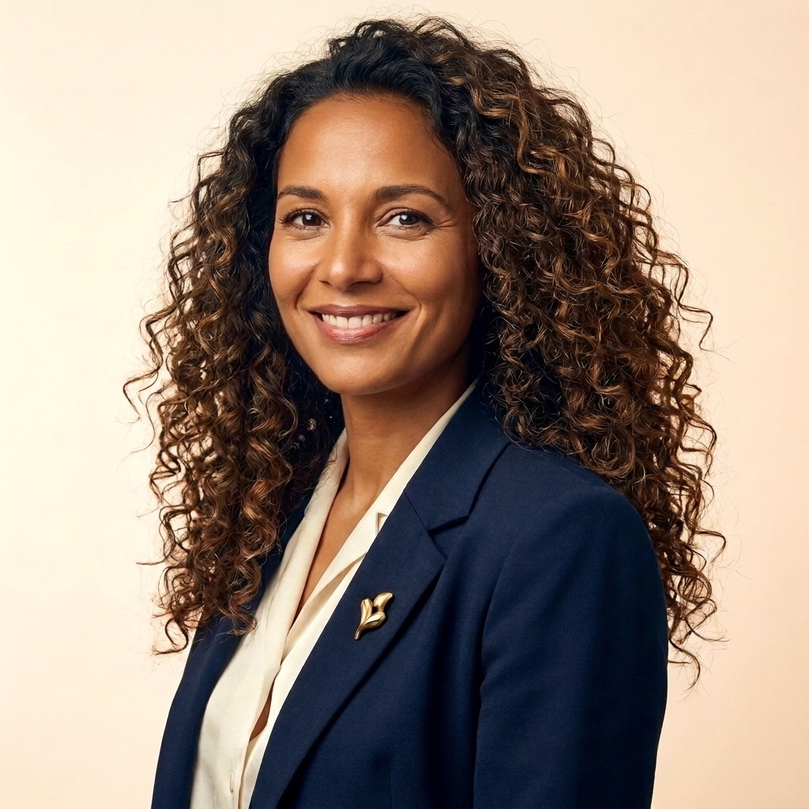

Claudia MÉNARD
Mon parcours s'est construit au fil de missions en cabinet et en administration publique — collectivités territoriales, enseignement supérieur et recherche, transports, formation professionnelle — où j'ai développé une double compétence : la maîtrise des rouages administratifs et le sens politique du cabinet.
Treize années d'engagement dans la vie locale et dans la vie associative, au service de l'intérêt général, m'ont donné une compréhension fine des enjeux des collectivités, des cabinets d'élus et de la gouvernance associative. J'ai accompagné des présidents d'institution, des directions générales, des maires et des directeurs de cabinet — un socle d'expérience que je mets aujourd'hui au service des dirigeants d'entreprise, des élus, des responsables associatifs et des porteurs de projets.